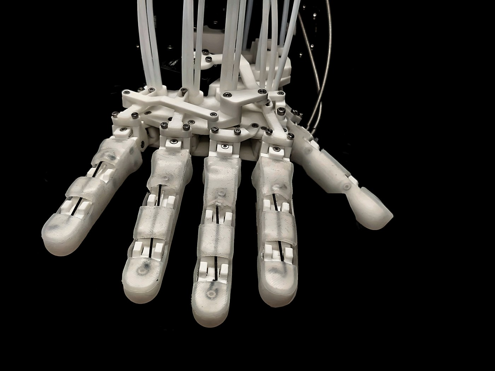
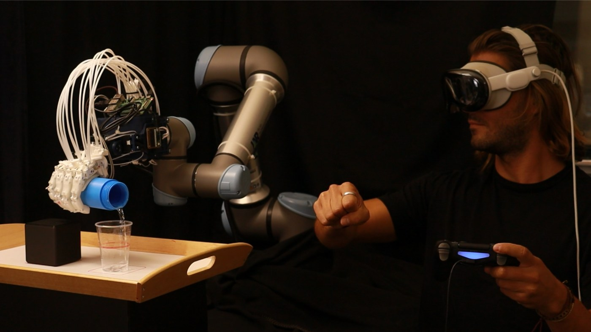
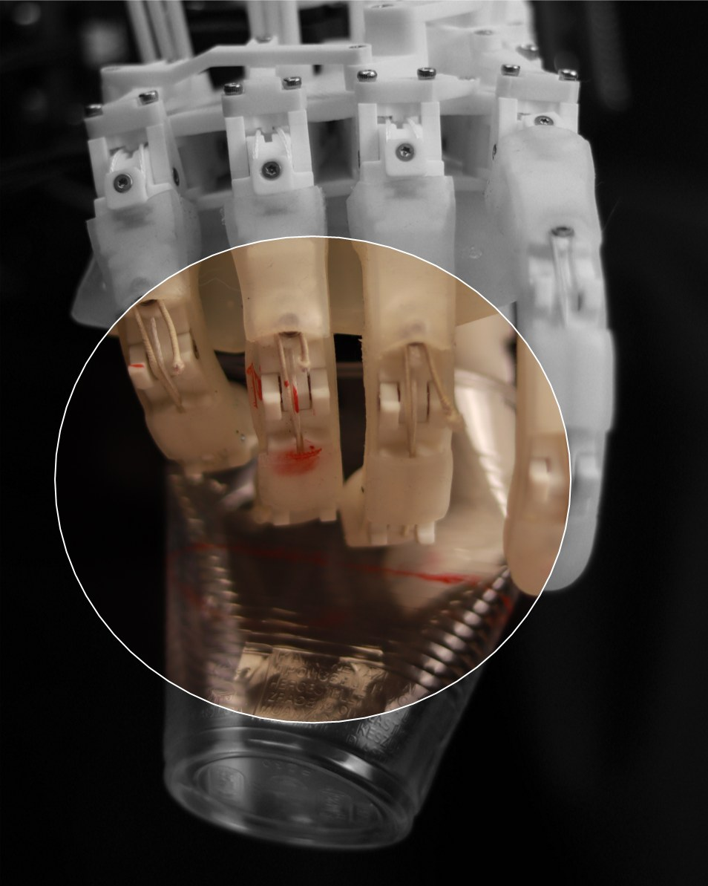
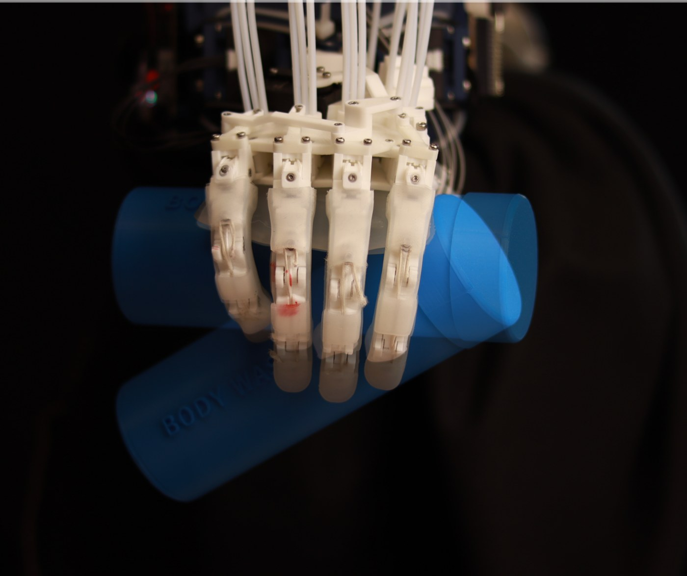
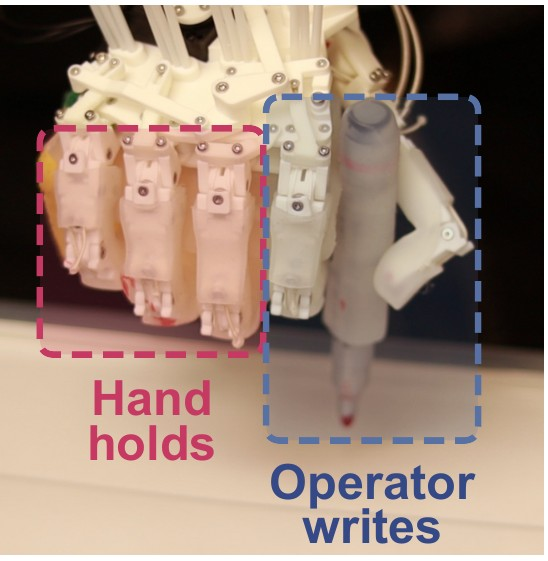

Compliance as a sensor
Springs in series with the tendons, read by potentiometers in the motor box, give joint angles and finger forces without any sensor on the fingers.
CREATE Lab · EPFL
1CREATE Lab, EPFL, Lausanne, Switzerland 2Institute of Mechanical Intelligence, Sant'Anna School of Advanced Studies (SSSA), Pisa, Italy 3Department of Computer Science, Loughborough University, UK

In vision-based teleoperation of robotic hands, the operator receives no haptic feedback and therefore struggles to regulate the grasp force, while adding tactile sensors to the fingers increases wiring, cost and integration complexity. Compliant hands offer an alternative, as their mechanical compliance, usually treated only as a passive property for safe and adaptive grasping, can also serve as a source of information. Here, we show that the elastic transmission of a compliant, tendon-driven anthropomorphic hand can itself act as the sensor for shared-control telemanipulation. Series springs in the tendon routing are read by potentiometers in a forearm-mounted motor box, from which the hand estimates its joint states and finger forces without any external sensors. Building on this self-sensing, we develop a contact-aware shared-control framework for VR-based teleoperation. The robot hand is controlled through a mapping from the operator's hand kinematics until a contact is detected proprioceptively. Control then switches to a finger-level force controller whose set point is determined by the operator's grasping speed, and control authority can be allocated to individual fingers. Experiments validate the system's force estimation and increased grasp success rate compared with direct teleoperation for fragile and heavy objects. These results show that compliance can serve not only for passive adaptation but also as an intrinsic sensing resource for physical human–robot collaboration.

Springs in series with the tendons, read by potentiometers in the motor box, give joint angles and finger forces without any sensor on the fingers.

A rise of the spring signal marks the contact, and the hand takes over the finger before the operator, who feels nothing, crushes the object.

How fast the operator closes the hand selects a gentle or a firm hold: a slow closure protects a fragile cup, a fast one secures a heavy bottle.

Each finger runs its own state machine, so the hand can hold one object with its ulnar fingers while the operator uses the thumb and index finger for a tool.
Without shared control, the operator squashes a plastic cup. With shared control, the contact detected on the thumb spring transfers control to the hand, which holds a safe posture while the operator keeps closing.
When the ring and little fingers are hidden from the headset cameras, their tracking stays flexed, and the robot executes this tracking error.
The ulnar fingers hold a sponge while the thumb and index finger pick up a pen, write, cap the pen, and erase the writing with the retained sponge.
A fragile cup and a 220 g bottle with shared control off and on, the success rates over 20 trials, and a continuous pouring task in which the closing speed selects a gentle or a firm hold.
@article{wang2026selfsensing,
title = {Self-Sensing Compliant Anthropomorphic Hand for Speed-Dictated
Shared Force Control in Teleoperation},
author = {Wang, Huijiang and Zhang, Yu and Chen, Rui and Bonato, Tristan and
Eom, Jaemin and Junge, Kai and Pan, Cheng and Dai, Benhui and
Xie, Yue and Hughes, Josie},
year = {2026},
note = {Under review}
}